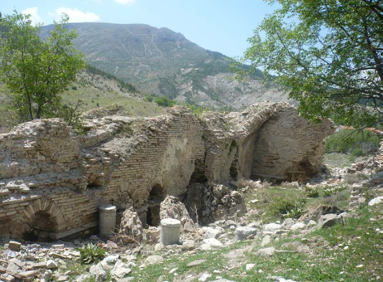
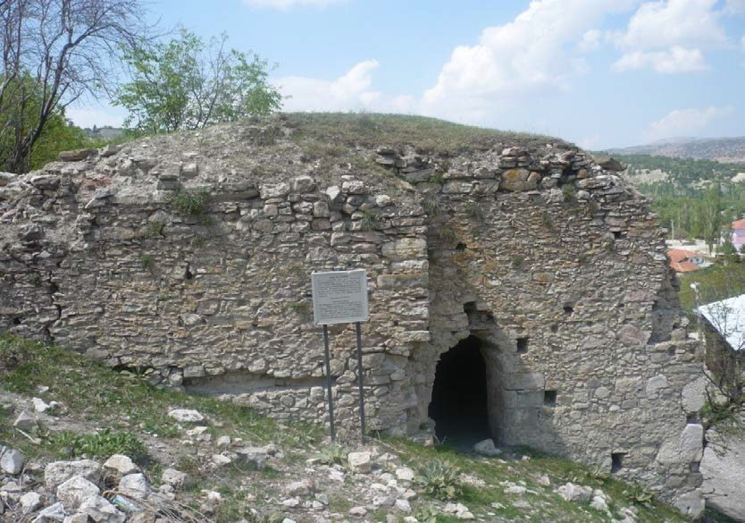
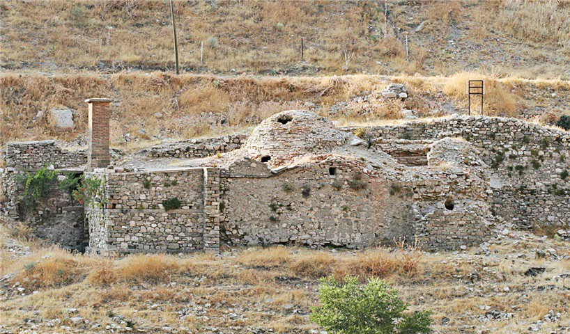
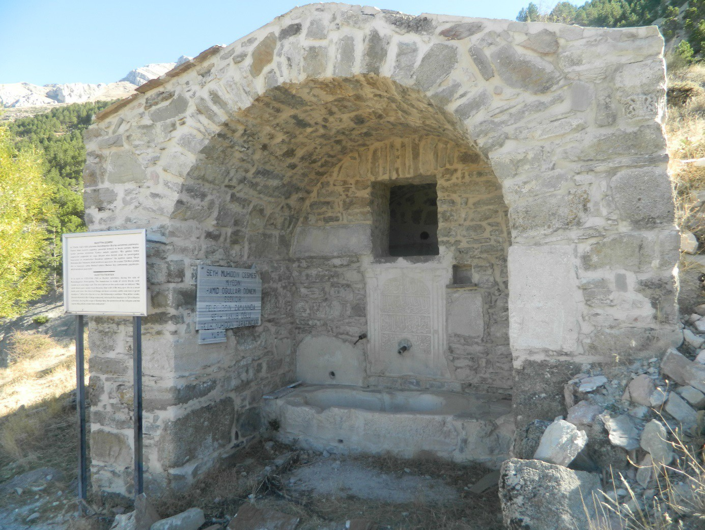
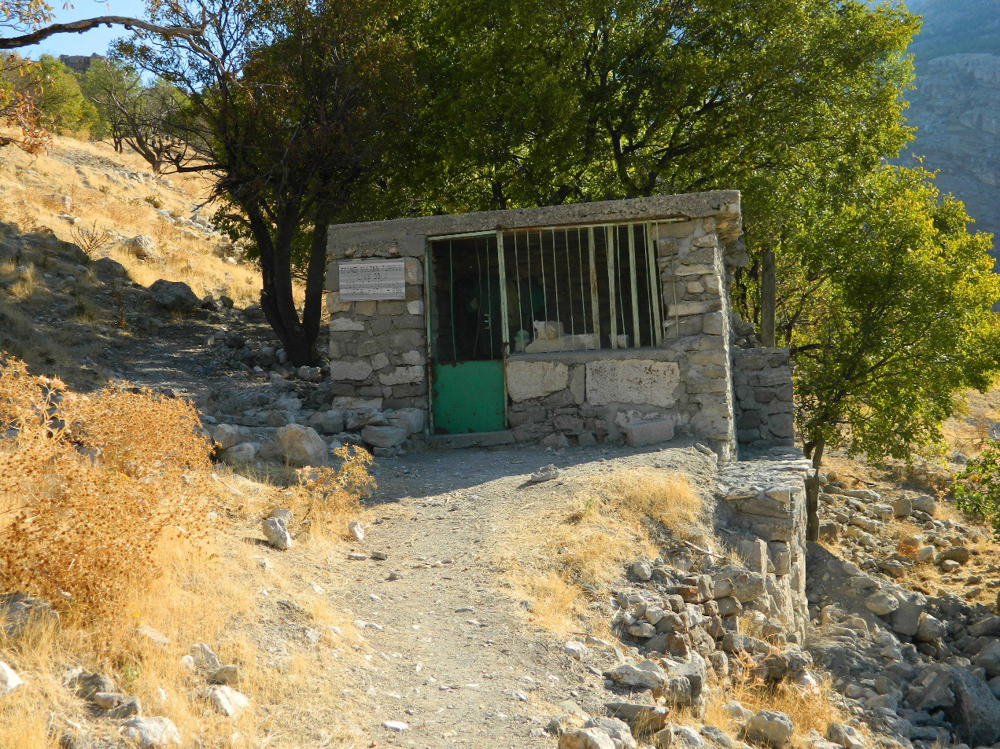

- ULUBORLU KALESİ
- ALAADDİN CAMİSİ
- BAHÇE CAMİSİ
- KARGILI LALA MEDRESESİ
- KARABEY HAMAMI (SULTAN HAMAMI)
- BALTA BEY HAMAMI (MUHTESİP HAMAMI)
- YENİ HAMAM (HAMAM-I CEDİD)
- ARSLANLI ÇEŞME
- BÜYÜK ÇEŞME
- ŞEYH MUHİDDİN ÇEŞMESİ
- ESKİ ULUBORLU ŞEHRİNDE HALEN AYAKTA OLAN DİĞER ÇEŞMELER
- BÜYÜK KÖPRÜ
- KÜÇÜK KÖPRÜ
- CİRİMBOLU SU KEMERİ
- SALİH EFENDİ CAMİİ MİNARESİ
- BORLU KERVANSARAYI
- AHİ BAHAADDİN TÜRBESİ
- AHİ ŞEMSEDDİN TÜRBESİ
ULUBORLU KALESİ

Uluborlu kalesinin Seleukos’lar zamanından daha önceki yıllarda inşa edildiği bilinmektedir. Deniz seviyesinden 1200 metre yüksekliğinde bir tepede inşa edilmiş olan kale üç tarafı uçurumlarla çevrili olduğu için Şehir Çayı olarak adlandırılan dereden Uluborlu ovasına kadar uzanan bir set şeklinde oluşturulmuştur. Bu kale duvarın kalınlığı yaklaşık olarak 3 metre civarında yüksekliği isi 6 metredir. Şu anda harap olduğu için görünmeyen ancak daha önceki kaynaklardan edinebildiğimiz bilgilere göre surlar üzerinde toplam üç adet burç bulunmakta ve halen yaşayan halk tarafından bu kısımlara Buruç adı verilir.
Uluborlu kalesinin halen 200 metrelik bir kısmı ayaktadır. Sağlam kalan bu kısımlar kalenin en önemli bölümlerini teşkil etmekte ve burada iki kale kapısı halen dahi mevcuttur. Bu kapılardan büyük olanı kalenin inşası esnasında yapılmıştır. Diğer kapı ise Tanzimat fermanından sonra, kale içinde yaşayan gayrimüslim Türklerin giriş çıkışlarını sağlamak amacıyla yapılmıştır. Surların en kuzeyinde kalan burcun yüksekliği 11 metre kalınlığı ise 7,5 metredir. Bu burcun üzerine çıkmak amacıyla kullanılan kapısının yüksekliği 4 metre eni ise 2,5 metredir. Geometrik olarak 10 metre yüksekliğinde yamuk şeklindeki ikinci burcun bir yüzeyinin genişliği 4,5, kuzeyinde kalan yüzeyin eni 10, güneyindeki yüzeyin eni ise 5 metreden ibarettir. Diğer burç 11 metre yüksekliğinde bir yapı olup birisi 6 diğeri ise 8 metre genişliğinde yüzeyleri bulunmaktadır.
Kalenin inşası ve tamiri esnasında kullanılan taşların bir kısmı daha önceki tarihi kalıntılardan elde edilmiştir. Bunlar incelendiği zaman Helenistik dönem ve geç Roma dönemine ait kalıntılarla birlikte Karamanlidika olarak kaleme alınmış kitabelere rastlanmaktadır. Bu yapının daha sonradan tamir gördüğü bu kalıntılardan anlaşılmaktadır. Osmanlı Devleti zamanında Ankara Savaşından sonra Timur Han tarafından tahrip edilen Uluborlu Kalesi daha sonra tekrar surların kalıntılarından tamir edilmiştir.
ALAADDİN CAMİSİ

Anadolu'nun sağlam, ayakta ve halen kullanılan en eski tarihi eserlerden biri
olan
Uluborlu Alaaddin CamiiHamitoğlu Beylerinden Sultan Alaaddin Keykubat tarafından 1231 yılında
Uluborlu'nun
Hamitoğullarının başkenti iken yaptırılmıştır.Tarihte geçirmiş olduğu iki yangında çatısı hasar görmekle
beraber ana bina ve minaresi ilk yapıldığı şekilde orijinalliğini korumaktadır. Caminin bitişiğinde
zamanında kırk bin el yazması ve basılı eseri barındıran bir kütüphane mevcuttur. Bu kütüphanenin
kitapları
Cumhuriyet Döneminin başlarında İstanbul ve Konya kütüphanelerine nakledilerek koruma altına alınmıştır.
Camiinin ön cephesinin doğu köşesinde hem seyyit, hem şerif yani hem baba hem anne tarafından Peygamber
(A.S.)'ın soyuna dayanan torunlarından Şerif Hasan (R.A.)'nın kabri bulunmaktadır.
Camiinin iç ve dış mekanlarının onarımı ve restorasyonu yapılarak 22 Eylül 2006 Cuma günü bir törenle
yeniden ibadete açıldı. Camiinin minaresine 2004 yılında yıldırım düşmesi sonucu çatlaklar oluşmuş, bu
hasar
ve camiinin çatısı Antalya Vakıflar Bölge Müdürlüğü tarafından onarılmıştır. Camiinin iç mekanları
Uluborlu
Hayırlar Derneği tarafından aslına uygun olarak yenilenmiş, dış mekanları da Uluborlu Belediyesi
tarafından
yine aslına uygun olarak yeniden düzenlenmiştir.
BAHÇE CAMİSİ

Bahçe Mahallesi’nde yer alır. Caminin inşa tarihi ve banisi hakkında herhangi bir bilgi mevcut değildir. Cami, dikdörtgen plan üzerine, ahşap kirişleme üzeri toprak damlı olarak inşa edilmiştir. Camiye giriş, kuzey cephe üzerindeki bir kapı ile sağlanmakta olup, Son Cemaat Yeri ve minaresi mevcut değildir. Cami 2017 yılında aslına uygun olarak restore edilmiş ve hizmete açılmıştır.
KARGILI LALA MEDRESESİ
Kargılılala Medresesi belli bir dönem I. Gıyaseddin Keyhüsrev’in eğitim aldığı bir medresedir, halk arasında bu yapıya Taş Medrese adı verilmektedir. Günümüzde halen kalıntıları mevcut olan restore edilebilecek nitelikte olan bu medrese Selçuklu medrese mimarisinin tüm özelliklerini taşımaktadır.
Dıştan dışa, 14.60x23.50 m ebadında olan medresenin kuzeyde kalan duvarları tamamen batı yönündeki duvarının kuzey yönü yıkık haldedir. Sözü edilen medrese Osmanların son dönemlerine kadar kullanılmıştır. Daha sonra 1965 yılına kadar ise mesken olarak değerlendirilmiştir. Uluborlu şehrinin yer değiştirdi 1970 li yıllarda insanlar tarafından ev olarak kullanılan bu medrese içerisinde bir de türbe bulunmaktadır. Bu türbenin Yunus Emre’ye ait olma ihtimali çok yüksektir.
Bu medreseden hariç olarak şu anda kalıntılarının olmadığı iki adet daha Selçuklular dönemine ait medrese bulunmakta idi. Bunlardan bir tanesi Selçuklu Sultanı II. Kılıçarslan dönemine ait olan Alaca Mahallesindeki Alaca Medresesi, diğeri ise Alaaddin Camii bitişiğindeki Alaaddin Medresesidir. Bu medreseler Osmanlılar döneminde daha da artarak sayısı on ikiye ulaşmıştır. Bunların adları şöyledir; Ruşaniye, Alemdar, Darulkurra, Cedid, Hudaverdi, Arapcık, Safaiyye, Coşkun, Katipoğlu medreseleri.
KARABEY HAMAMI (SULTAN HAMAMI)
Uluborlu’da Selçuklu dönemine ait en eski hamamlardan birisi Karabey Hamamı (Sultan Hamamı) ki; 1932 yılına kadar hizmet vermekte idi, günümüzde ayakta olun bu eser restore edilmeye muhtaç haldedir. Vakıf Defterlerinde Sultan Hamamı olarak adlandırılan bu eser, bölgenin fethi esnasında görev alan ve daha sonra Uluborlu topraklarının ikta olarak verildiği bir uç beyi olan Kara Bey tarafından inşa edilmiştir. Eski şehirde Büyük Çeşme mahallesinde bulunan bu hamam H. 637 (M. 1240) tarihinde inşa edilmiştir. İki bölümden oluşan hamamın dış kısmında şadırvan, soğukluk, soyunma kabinleri, külhan ve odunluk bulunmaktadır. İç kısmında ise göbek taşı etrafında ikisi kapalı ikisi açık olmak üzere dört adet kurnası yer almaktadır. Bu kurnaların ikisinin üzerinde kubbe bulunmakta, diğer kurnalar ise göbek taşının karşısında ve genel kubbenin altında bulunuyordu. Kara Bey Hamamı (Sultan Hamamı); Türkiye Selçuklu hamam mimarisinin Anadolu’daki sayılı örneklerinden birisidir. İçerisinde Selçuklu motifleri ile bezenmiş yapı zamanımıza kadar restore edilebilecek bir şekilde ulaşmıştır.
BALTA BEY HAMAMI (MUHTESİP HAMAMI)
İkinci Selçuklu dönemi hamamı ise Baltabey Hamamı (Muhtesip Hamamı)’dır. Uluborlu Muhtesip Mahallesinde bulunan bu eser Vakıf Defterlerinde Muhtesip Hamamı olarak kayıt altına alınmıştır. Said Demirdal tarafından incelenen Uluğbey Tekke Menâkıb- namesinde bu hamamın H. 575 (M 1180) yapıldığı kaydına ulaşılmıştır. Bu tarih değerlendirildiğinde Türkiye Selçukluları tarafından şehrin son fethedildiği tarih olduğu görülür. Bu durum Anadolu’ya gelen Türklerin köklü bir şehir kültüründen geldiklerinin kendilerine özgü bir mimari tarza sahip olduklarını ve bu tarzı Anadolu’ya taşıdıklarını göstermektedir.
1974 yılına kadar hizmet vermiş olan eserin özellikleri şöyledir. Dış kısmında bir adet şadırvan, soğukluk soyunma kabinleri, külhan ve odunluk bulunmakta idi. İç bölümünde ise üçü kapalı üçü açık üç kurna yer almaktaydı. Bu kurnaların üç tanesi kemer altında üç tanesi ise kubbe altında yer bulunmaktadır. Kitabesi bulunmamasına rağmen kitabe yeri bulunan, bu yapının kitabesinin muhtemelen yıkıntılar arasında kaybolmuş olması ihtimali yüksektir. Şu anda çoğu kısmı harap olan bu hamamın kalıntılarının altında bu kitabenin bulunması muhtemeldir.
YENİ HAMAM (HAMAM-I CEDİD)

Türklere has hamam kültürünün en güzel örneklerinden birisi de Vakıf Defterlerinde Hamam-ı Cedid olarak anılan, halk arasında Ev Hamamı olarak adlandırılan eserdir. Bir kısmı yıkılmış olan hamamın şuan kubbe ve kurnası sağlam vaziyettedir.
Bu saydığımız hamamlardan başka Saraçbaşı Hamamı, Emrem Hamamı, Hoceki Hamamı, Çelebiler Hamamı olmak üzere dört tane daha hamam bulunmakta idi. Bu hamamlarla ilgili kayıtlara Osmanlılar döneminde tamamen rastlanılmaktadır. Şehrin yapısı büyüklüğü göz önünde bulunduracak, aynı zamanda diğer hamamların bulundukları mahalleler değerlendirmeye tabi tutulacak olursa sözü edilen hamamların her bir mahalleye dağıtılması durumunda; bunlarında Selçuklu dönemi eserleri olduğu kanısına varılabilir.
ARSLANLI ÇEŞME

Şehir kalıntıları üzerinde günümüzde tespit edilebilen 16 adet çeşme yer almaktadır, bunların bir kısmı restore edilmiş olmasına rağmen bazılarının tescili ve restorasyon çalışması henüz yapılmamıştır. Sözü edilen çeşmelerin iki tanesinin kitabeleri günümüze ulaşmış, bir tanesinin üzerinde de aslan figürünün bulunduğu kabartma bir taş bulunmaktadır. Halk arasında Aslanlı Çeşme adı verilen bu eser Büyük Çeşme mahallesinde yer almaktadır. Roma dönemine ait olan bu eserin yapısı halen sağlam olmakla birlikte suyu akmadığı için kullanılamamaktadır.
BÜYÜK ÇEŞME

Türkiye Selçuklu dönemi eseri olarak üzerinde kitabesi bulunduğu için Büyük Çeşme adlı çeşmeyi tespit edebiliyoruz. Şu an aynı adla anılan mahallede bulunan bu yapı 2005 yılında Kültür Bakanlığı tarafından restore edilmiştir. Üzerindeki kitabe incelendiği zaman Türkiye Selçuklu Sultanı Alaaddin Keykubad’ın ölümünden bir yıl sonra II Gıyaseddin Keyhüsrev döneminde, H.636-M.1238 yılında yaptırıldığı görülmektedir. Çeşme üzerinde celi sülüs olarak kaleme alınan inşa kitabesinden ayrı olarak, “es-sultâni” ibaresinin bulunduğu bir kitabe daha bulunmaktadır. Bu kitabe şekli Türkiye Selçuklu dönemi eserlerinde sıkça görülmektedir.
ŞEYH MUHİDDİN ÇEŞMESİ
Hamidoğulları’nın kurulduğu ve ona başkentlik etmiş olan bir yer olan Uluborlu’da bu döneme ait olan Şeyh Muhiddin adında bir çeşme bulunmaktadır. Çeşmenin adı halk arasında zamanla “Miyedin”e dönüşmüş ve bu şekilde anılmaktadır. Salih Efendi Mahallesinde bulunan bu eserin sülüs yazı tekniği ile kaleme alınan inşa kitabesi incelendiği zaman Hamidoğulları beyliğinin kurucusu Hamid Bey’in torunu Dündar Bey adına H. 724-M. 1323 tarihinde inşa edildiği anlaşılmaktadır. 2005 yılında restore edilen bu eser günümüzde sağlam olarak bulunmakta ancak kullanılmamaktadır.
ESKİ ULUBORLU ŞEHRİNDE HALEN AYAKTA OLAN DİĞERÇEŞMELER
Yukarıda isimlerini zikretmiş olduğumuz çeşmelerin dışında on üç adet daha çeşme bulunmaktadır. Bunların üzerlerinde kitabe bulunmaması ve devri anlatan kaynaklarda eserlerin dönemleri ile ilgili bilgilere rastlayamadığımızdan dolayı yapım tarihleri ile ilgili net bir bilgiye ulaşılamamaktadır. Ancak şehrin büyüklüğü ve önemi dikkate alınacak olursa bu çeşmelerin Türkiye Selçukluları döneminden beri kullanılageldiği sonucuna ulaşabilir.
- ARAPÇIK ÇEŞMESİ
- GAFLE ÇEŞMESİ
- KÜLLALI ÇEŞMESİ
- EMREM ÇEŞMESİ
- 1.BAHÇE MAHALLESİ ÇEŞMESİ
- 2.BAHÇE MAHALLESİ ÇEŞMESİ
- BÜYÜK ÇEŞME MAHALLE ÇEŞMESİ
- SU SARNICI
BÜYÜK KÖPRÜ

Selçuklu ve beylikler dönemi sonrasında da gelişimini sürdüren Uluborlu’da Ortaçağdan kalma iki adet köprü bulunmaktadır. Bunlardan Büyük Köprü şehir çayı üzerinde Türkiye Selçukluları döneminde inşa edilmiştir. Tek kemerli taş yapı olan bu köprü şu an insanlar tarafından kullanılmaktadır.
KÜÇÜK KÖPRÜ

Küçük Köprü olarak adlandırılan ve Şehir Çayı üzerinde tek kemerli olarak inşaa edilmiş olan bu eser zaman içerisinde tamir görmüş ve halen daha faaliyet halindedir.
CİRİMBOLU SU KEMERİ

1869 yılında Sultan Abdülaziz döneminde 40 bin kuruş devlet desteği ve halktan toplanan yardımlarla yapımına başlanmıştır. İlk kemerin inşasından sonra bu kemere gelecek basıncı dağıtabilmesi için ikinci bir kemer daha yapılarak su kemeri 1872 tarihinde hizmete açılmıştır.“Cirimbolu Köprüsü” diye adlandırılan bu eser, Osmanlılar dönemine ait Uluborlu’daki en önemli yapılardandır. Türk Mimarisinin güzel bir örneği olan Cirimbolu Su Kemerinin ebatları şu ölçülerdedir: Uzunluğu 45 metre, yüksekliği 21 metre, eni 2,5 metredir. Eserin sonradan sökülen kitabesinde yapının inşasının bitim tarihi (1289/1872) olarak gösterilmektedir.
SALİH EFENDİ CAMİİ MİNARESİ

Hamidoğulları dönemine ait bir eser olan Salih Efendi mahallesindeki caminin bugün sadece minaresi ayaktadır. Halk arasında Sallanan Minare adıyla anılan bu minarenin kitabe yeri bulunmasına rağmen kitabesi kayıptır yapılacak bir kazı çalışmasında muhtemelen bu ortaya çıkabilir. Caminin bulunduğu yerde üzerinde Hamidoğulları dönemini yansıtan kitabenin bulunduğu Şeyh Muhiddin Çeşmesi bulunmaktadır, bu da caminin dönemi hakkında bize bilgi vermektedir. Salih Efendi Mahallesi tarihte Hamidoğulları’nın soyundan gelen Dündar Bey’in ailesinin yaşadığı bir mahalle olarak bilinmektedir.
BORLU KERVANSARAYI

Tarih boyunca Batı Anadolu askeri ve ticari yollarının kavşak noktasında bulunan Uluborlu’da Selçuklu dönemi kervansaray kalıntısı.
AHİ BAHAADDİN TÜRBESİ
Halk arasında kutsallığına inanılan ve Efendi Sultan türbesi adıyla anılan Ahibahaaddin türbesinin camisine ait bilimsel kaynaklarda zikredilen bir kitabe bulunmaktadır. Bu kitabe türbenin bulunduğu yerdeki caminin tamir kitabesidir. Bu kitabede caminin İlyas Bin Ferhad adlı bir ileri gelen tarafından H. 699 M.1299 senesinde tamir edildiğini göstermektedir. Türbe camii haziresinde bulunmaktadır. Halen kalıntılarının mevcut olduğu bu cami Ortaçağ şehir geleneğine göre gayrimüslim mahallesini Müslüman Türk mahallesinden ayıran bölümde olduğu ve ilk Türk yerleşiminde bulunduğu için Uluborlu’daki ilk Türk İslam Camisi niteliğindedir.
AHİ ŞEMSEDDİN TÜRBESİ

Türkiye Selçukluları dönemine ait Uluborlu’da Ahi Şemseddin adında bir camii bulunmakta idi. Ahilik kültürünün yoğun yaşandığı sanayi ve ticaretin çok yaygın olduğu Uluborlu’da ahilere ait kalıntılardan biri olan bu yapının bugün sadece türbesi ayaktadır. Bir ahi tekkesi içerisinde bulunan bu caminin yanında bulunan tekkenin kitabesinde H. 714 M. 1314 tarihi bulunmaktadır. Türbenin cami haziresine yapıldığı göz önüne alınacak olursa buradaki caminin daha önce inşa edilmiş olacağı sonucuna ulaşılır. Buna göre Ahi Şemseddin camisinin Türkiye Selçuklu dönemi eseri olduğu yönünde bir şüphe kalmamalıdır. Şu anda halk tarafından yedi kardeşler diye anılan bu türbe ayakta ve caminin temeli ise türbe yanında halen mevcuttur. Uluborlu’da birçok eserin tahrip olmasına hatta neredeyse şehrin yarıya yakınına yakın kısmının yanmasına sebep olan 1911 yılındaki yangında cami yanmış kurtulan türbenin bir kısmı yeniden yapılarak türbe kitabesi üzerine konulmuştur.